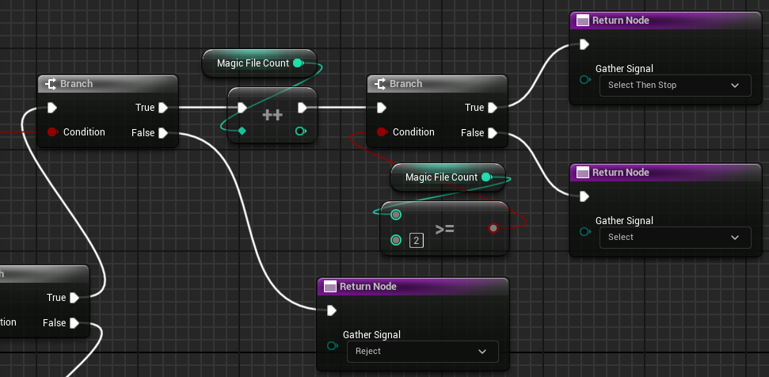

CakeMix
Cake Mix Library
CakeMixLibrary provides a suite of advanced functionality built on top of the Cake IO's core APIs and objects. Its primary purpose is to provide an ergonomic interface for some common complex operations, such as collecting elements from a directory and storing them in a container.
Warning
This library and its documentation require a firm understanding of Cake IO fundamentals and its core objects.
Directory Work Functions
Directory Work is defined as any operation that involves traversing a target CakeDir object's elements in order to accomplish some kind of work. The kind of work can vary greatly, from counting elements at a specific depth to gathering elements into an array for future processing.
Directory Work Error Handling
Every function involving directory work will use an ECakeOutcomeDirWork to indicate the outcome of the overall work process. There are only a few types of errors we can encounter in directory work operations:
- If the source directory does not exist,
SourceDirectoryDoesNotExistwill be assigned to the outcome. - If the traversal operation associated with the work fails to launch,
TraversalDidNotLaunchwill be assigned to the outcome. - If the directory work encounters an error that causes it to abort,
Abortedwill be assigned to the error. - Otherwise,
WorkCompletedwill be assigned to the outcome.
Not all directory work functions will generate Aborted outcomes. Some directory work is free from critical errors assuming it can start. Each function group in this section will have a short error handling section to provide guidance regarding the Aborted outcome value. Furthermore, feel free to reference the
The remaining outcomes here involve helping the caller ensure the operation itself actually was able to successfully run. Remember that traversal can fail to launch in a variety of circumstances. However, since the outcome has a specific value to inform you when the source directory doesn't exist, the only scenarios you need to worry about for traversals being launched are:
- Ensure valid traversal arguments are being sent. Unless you are casting numeric types to enums these should be very rare.
- Ensure the source directory has extensions in its extension filter when using a
WithFiltervariant of a particular directory work operation.
Gathering Elements to an Array
Often we'll want to collect files or subdirectories from a source directory and place them into a container for future processing. The Gather family of functions can help us accomplish this quickly and succinctly. These functions will use directory traversal to gather all target elements at a specified depth into an array. For instance, if we use GatherFiles and specify an OpDepth of shallow, then the resulting array will contain all shallow files contained within the specified CakeDir object.
Info
Since each Gather operation internally uses a directory traversal operation, all the standard parameters you can use to configure a traversal are available via the Gather function signature. We can adjust the extension filter settings when using a filtered GatherFiles operation, or determine if extension filters are cloned during a GatherSubdirs operation.
Gather Error Handling
Gather error handling is very simple -- assuming the directory work operation successfully begins, it will complete its work. There is no Aborted path that must be handled.
Gather Return Types
The Gather functions return the CakeMix exclusive order type TCakeMixBatch.
Regardless as to which Gather function we use, the return types will follow a similar form. We get a bool that indicates whether or not the gather operation successfully completed, an ECakeOutcomeDirWork that indicates outcome of the gather operation, and an array that contains all gathered elements.
Since our example shows Gather Subdirs, our returned array will be an array of CakeDir objects. If we were gathering files, this would be an array of CakeFile objects.
To gather all files in a directory at a specific depth, we use GatherFiles:
We can use GatherFilesWithFilter to utilize our source directory's extension filter:
FCakeDir ProjectDir{ FCakePath{TEXTVIEW("X:/cake-arena")}, TEXTVIEW("wav|ogg") };
FCakeMixBatchFiles SoundFiles
{
CakeMixLibrary::Dir::GatherFilesWithFilter(
ProjectDir,
ECakePolicyOpDepth::Deep
)
};
if (SoundFiles)
{
UE_LOG(LogTemp, Warning, TEXT("Gathered [%d] sound effect files!"), SoundFiles.Batch.Num());
}
To gather all subdirectories in a directory at a specified depth, we use GatherSubdirs:
FCakeDir ProjectDir{ FCakePath{TEXTVIEW("X:/cake-arena")} };
FCakeMixBatchSubdirs ShallowSubdirs{
CakeMixLibrary::Dir::GatherSubdirs(
ProjectDir,
ECakePolicyOpDepth::Shallow
)
};
if (ShallowSubdirs)
{
UE_LOG(LogTemp, Warning, TEXT("Gathered [%d] subdirectories!"), ShallowSubdirs.Batch.Num());
}
else
{
UE_LOG(LogTemp, Error, TEXT("Failed gathering subdirectories: [%s]"), *ShallowSubdirs.Result.ToString());
}
Gathering Elements via Custom Predicate
Sometimes we might want to gather files or subdirectories based upon some custom requirements, and for that we can use the GatherCustom family of functions. The interface is similar to the non-custom Gather functions, but this time we need to supply a callback that will control whether a particular element is gathered.
The callback will be invoked for every directory element that is visited during the gather traversal.
GatherCustom Error Handling
GatherCustom function outcomes can generate an Aborted value, and this occurs whenever the user-supplied callback returns an Abort signal.
Gather Custom Callback Signature
A GatherCustom's callback signature is nearly identical to an advanced directory traversal style. It will receive a single argument, either a CakeFile or a CakeDir object depending on what element the gather operation is targeting, and it will need to return a signal back that will help control the gather operation's behavior. The signal that is returned is of type ECakeSignalGather:
/** An enum used to send handle control flow / item selection in filter-like functions. */
enum struct ECakeSignalGather : uint8
{
/** Add the element to the gather container and continue the traversal. */
Select = 0 UMETA(DisplayName = "Select"),
/** Do not add the element to the gather container and continue the traversal. */
Reject UMETA(DisplayName = "Reject"),
/** Add the element to the gather container and then stop the traversal. */
SelectThenStop UMETA(DisplayName = "Select Then Stop"),
/** Do not add the element to the gather container and then stop the traversal. */
RejectThenStop UMETA(DisplayName = "Reject Then Stop"),
/** A critical error was encountered and the gather operation should immediately abort. */
Abort UMETA(DisplayName = "Abort"),
MAX UMETA(Hidden)
};
The most basic signal commands are Select / Reject. Select is used when we want to add the current element to the gathered batch and then continue the gather operation. Reject is used when we want to skip the current element and continue the gather operation.
SelectThenStop and RejectThenStop function just like their more basic forms Select and Reject, except the gather operation will not visit any more elements and will immediately stop, returning whatever has been gathered up to that point.
Finally, Abort is a special value used to indicate that a critical error has occurred. The gather operation will not add the currently visited element and it will immediately abort the gather operation, assigning the operation's outcome to an Aborted value. Remember, this value is meant for critical errors. If you encounter a recoverable error where you might want to stop the current gather operation but still use the gathered batch of files or subdirectories, using one of the ThenStop signal values is more appropriate.
Gather Custom Callback Basic Example
Let's begin with a simple callback example. We're going to gather any text files that contain a specific phrase. To do this, we'll read every file we get sent as a text file, check to see if the text contains the specific phrase, and gather any that do contain the phrase.
The structure will be simple: Assuming the File IO Read operation succeeds, we use FString's Contains function on the file's text data. If it contains our magic phrase, we return Select, which will add the current file to the gather batch. If it does not, we return Reject.
If the File IO Read operation fails, we return Abort, which signifies a critical error that we don't want to recover from. This would be the branch to handle any necessary error reporting. In our case, we'll simply abort, but we have enough context to do proper error reporting if we needed to. Finally, keep in mind that we are in complete control over determining what constitutes a critical error. In some scenarios, it might be fine to just skip that file and continue -- you remain in total control over how the gather operation should proceed. Use whatever works best for your current context.
auto ContainsMagicText = [](FCakeFile NextFile) -> ECakeSignalGather
{
if (TCakeOrderFile<FString> ReadText = NextFile.ReadTextFile())
{
if ( ReadText.Order.Contains(TEXTVIEW("MagicData")) )
{
return ECakeSignalGather::Select;
}
return ECakeSignalGather::Reject;
}
else { return ECakeSignalGather::Abort; }
};
The form if (cond) { Select } else { Reject } is quite common when writing GatherCustom predicates, and so Cake IO offers some convenience utilities to make writing that a bit more concise:
The CakeSignalGather namespace has utility functions to help spare us the boilerplate. We can use SelectIf as the equivalent for if (cond) { Select } else { Reject }:
auto ContainsMagicText = [](FCakeFile NextFile) -> ECakeSignalGather
{
if (TCakeOrderFile<FString> ReadText = NextFile.ReadTextFile())
{
return CakeSignalGather::SelectIf( ReadText.Order.Contains(TEXTVIEW("MagicData")) );
}
else { return ECakeSignalGather::Abort; }
};
Note
The CakeSignalGather namespace also contains the complement to SelectIf, which is the utility function RejectIf. This function is equivalent to the form if (cond) { Reject } else { Select }.
CakeMixBlueprintLibrary provides an automatic conversion from a bool to an ECakeSignalGather. The signal will be Select when the bool is true, otherwise the signal will be Reject.
This new callback is logically equivalent to the previous one. Use whichever style you prefer.
Gather Custom Callback Advanced Example
The Gather signal also allows us to stop the gather process at any step. We can use either SelectThenStop or RejectThenStop, which will take action on the current item and then stop the traversal immediately.
Let's upgrade the predicate we made in the previous example. This time we'll make it so the predicate gathers two files and then stops. This is an ideal scenario to use the ThenStop signal value.
We'll keep track of how many files we've gathered via an integer, and then we'll increment that integer whenever we find a text file that contains our magic phrase. When the number of gathered files reaches two, we submit the SelectThenStop signal, which will gather the current item and then immediately stop the gather operation. Again, in the event that we encounter an IO operation error, we'll simply abort the gather operation.
auto ContainsMagicTextFirstTwo = [NumCollected = int32{ 0 }]
(FCakeFile NextFile) mutable -> ECakeSignalGather
{
TCakeOrderFile<FString> ReadText{ NextFile.ReadTextFile() };
if (!ReadText) { return ECakeSignalGather::Abort; }
if ( ReadText.Order.Contains(TEXTVIEW("MagicData")) )
{
++NumCollected;
if (NumCollected >= 2)
{
return ECakeSignalGather::SelectThenStop;
}
return ECakeSignalGather::Select;
}
else { return ECakeSignalGather::Reject; }
};
This callback is getting a little large for screenshots. Here is the portion of the callback with the new logic zoomed: 
We used the SelectThenStop signal because of how we setup our number termination logic. We could also change the logic so that once the number is greater than two we want to stop, but this time we wouldn't want to gather the current file because we already have gathered enough files. RejectThenStop will cause our gather operation to immediately stop, and the current file we have been passed will not be added to the gather batch.
auto ContainsMagicTextFirstTwo = [NumCollected = int32{ 0 }]
(FCakeFile NextFile, FCakeResultFileIO& OutResultFile) mutable -> ECakeSignalGather
{
if (NumCollected > 2)
{
return ECakeSignalGather::RejectThenStop;
}
TCakeOrderFile<FString> ReadText{ NextFile.ReadTextFile() };
if (!ReadText) { return ECakeSignalGather::Abort; }
if ( ReadText.Order.Contains(TEXTVIEW("MagicData")) )
{
++NumCollected;
return ECakeSignalGather::Select;
}
else { return ECakeSignalGather::Reject; }
};
Let's zoom in to focus on the two major changes. First, at the beginning of each step we are checking to see if we have already gathered two files. If so, we return RejectThenStop:
Second, when we find a magic file, we just increment the counter and return Select:
Technically this approach is inferior, since it requires an unnecessary visit to an extra file, but it serves as a simple example as to how the RejectThenStop signal value works.
Launching GatherCustom Operations
Once we have crafted our custom predicate callback, using the GatherCustom functions is extremely similar to using the Gather functions. We only need to add our predicate callback to the list of arguments we submit to the GatherCustom function:
FCakeDir ProjectDir{ FCakePath{TEXTVIEW("X:/cake-arena")}, TEXTVIEW("txt|md") };
auto ContainsMagicText = [](FCakeFile NextFile) -> ECakeSignalGather
{
if (TCakeOrderFile<FString> ReadText = NextFile.ReadTextFile())
{
return CakeSignalGather::SelectIf( ReadText.Order.Contains(TEXTVIEW("MagicData")) );
}
else { return ECakeSignalGather::Abort; }
};
FCakeMixBatchFiles MagicTextFiles
{
CakeMixLibrary::Dir::GatherCustomFilesWithFilter(
ProjectDir,
ECakePolicyOpDepth::Shallow,
ContainsMagicText
)
};
if (MagicTextFiles)
{
UE_LOG(LogTemp, Warning, TEXT("We gathered [%d] magic files!"), MagicTextFiles.Batch.Num());
}
Counting Elements in a Directory
Sometimes we just want to know the count of a target element within a directory, and the Count functions can help us quickly achieve this. We can count all items, just files, or just subdirectories at a specified depth.
Count Error Handling
The Count functions do not return an Aborted directory work outcome. Assuming the operation can launch, it will succeed.
Warning
The value returned a Count function is only valid if the count operation succeeds.
All the count functions return an FCakeMixCount object which just wraps an FCakeResultDirWork result and an int32 representing the number of elements counted. That's all there is to this function, nothing more, nothing less.
FCakeDir ProjectDir{ FCakePath{TEXTVIEW("X:/cake-arena")}, TEXTVIEW("txt") };
FCakeMixCount Items {
CakeMixLibrary::Dir::CountItems(ProjectDir, ECakePolicyOpDepth::Deep)
};
if (Items)
{
UE_LOG(LogTemp, Warning, TEXT("There are [%d] total items in [%s]."),
Items.Count, *ProjectDir.CloneDirName());
}
FCakeMixCount Files{
CakeMixLibrary::Dir::CountFiles(ProjectDir, ECakePolicyOpDepth::Deep)
};
FCakeMixCount TextFiles{
CakeMixLibrary::Dir::CountFilesWithFilter(ProjectDir, ECakePolicyOpDepth::Deep)
};
FCakeMixCount Subdirs{
CakeMixLibrary::Dir::CountSubdirs(ProjectDir, ECakePolicyOpDepth::Deep)
};
The Count functions return us three values: a bool that indicates if the count operation successfully ran, an ECakeOutcomeDirWork that indicates the outcome of the count operation, and an integer that represents the number of target elements found in the source directory at the specified depth.
That's all there is to these functions. We can count items (both files and directories), files, or subdirectories:
File Functions
As of now, CakeMixLibrary does not have any dedicated functions specifically for files. This section is reserved in case that changes in the future.
Path Functions
As of now, CakeMixLibrary does not have any dedicated functions specifically for paths. This section is reserved in case that changes in the future.
Error Handling
ToString Utility Functions
CakeMixLibrary offers various ToString functions which generate human-readable strings describing various error related types.
The ErrorHandling namespace contains ToString functions for various outcome and result types:
/** @return A human-readable string that describes the file IO outcome value. */
Cake IO_API [[nodiscard]] FString ToStringOutcomeFileIO(ECakeOutcomeFileIO Outcome);
/** @return A human-readable string that describes the directory IO outcome value. */
Cake IO_API [[nodiscard]] FString ToStringOutcomeDirIO(ECakeOutcomeDirIO Outcome);
/** @return A human-readable string that describes the directory traversal outcome value. */
Cake IO_API [[nodiscard]] FString ToStringOutcomeTraversal(ECakeOutcomeTraversal Outcome);
/** @return A human-readable string that describes the directory search outcome value. */
Cake IO_API [[nodiscard]] FString ToStringOutcomeSearch(ECakeOutcomeSearch Outcome);
/** @return A human-readable string that describes the directory work outcome value. */
Cake IO_API [[nodiscard]] FString ToStringOutcomeDirWork(ECakeOutcomeDirWork Outcome);
/** @return A human-readable string that describes the batch operation outcome value. */
Cake IO_API [[nodiscard]] FString ToStringOutcomeBatchOp(ECakeOutcomeBatchOp Outcome);
/** @return A human-readable string that describes the file IO result value. */
Cake IO_API [[nodiscard]] FString ToStringResultFileIO(FCakeResultFileIO Result);
/** @return A human-readable string that describes the directory IO result value. */
Cake IO_API [[nodiscard]] FString ToStringResultDirIO(FCakeResultDirIO Result);
/** @return A human-readable string that describes the directory traversal result value. */
Cake IO_API [[nodiscard]] FString ToStringResultTraversal(FCakeResultTraversal Result);
/** @return A human-readable string that describes the directory search result value. */
Cake IO_API [[nodiscard]] FString ToStringResultSearch(FCakeResultSearch Result);
/** @return A human-readable string that describes the directory work result value. */
Cake IO_API [[nodiscard]] FString ToStringResultDirWork(FCakeResultDirWork Result);
/** @return A human-readable string that describes the batch operation result value. */
Cake IO_API [[nodiscard]] FString ToStringResultBatchOp(FCakeResultBatchOp Result);
CakeMix ensures that we can always easily turn an outcome value into a human readable string. When you are working with an outcome value, you can either call the appropriate ToString function manually:
Or you can use the auto-conversion node by just connecting the outcome value to a string node:
Finding the appropriate ToString function is simple, just drag off the outcome value, ensure Context Sensitive is checked, type in 'ToString', and you should easily find the function you need:
CakeMix Exclusive C++ Types
CakeMix introduces a few types exclusive to the C++ API. They are defined in Cake IO/CakeMixTypes.h.
Note
The following section only applies to native C++ Cake IO code.
TCakeMixBatch
This type is used by CakeMix to return a collection of files or subdirectories from some directory work operation. This simple type merely combines a FCakeResultDirWork result type with a TArray<T>, where T is the element type:
template <typename ElementType>
struct TCakeMixBatch
{
FCakeResultDirWork Result{};
TArray<ElementType> Batch{};
};
using FCakeMixBatchFiles = TCakeMixBatch<FCakeFile>;
using FCakeMixBatchSubdirs = TCakeMixBatch<FCakeDir>;
There are a variety of convenience functions provided:
FORCEINLINE [[nodiscard]] TArray<ElementType>& operator*() { return Batch; }
FORCEINLINE [[nodiscard]] bool WorkWasCompleted() const { return Result.WorkWasCompleted(); }
FORCEINLINE [[nodiscard]] operator bool() const { return WorkWasCompleted(); }
FORCEINLINE [[nodiscard]] bool GatheredAny() const { return Batch.Num() > 0; }
FORCEINLINE [[nodiscard]] bool WorkWasCompletedAndGatheredAny() const
{ return Result.WorkWasCompleted() && GatheredAny(); }
FCakeMixCount
This is a simple type that bundles an FCakeResultDirWork with an integer that represents the number of elements counted.
There are a variety of utility functions provided:
FORCEINLINE [[nodiscard]] int32& operator*() { return NumElements; }
FORCEINLINE [[nodiscard]] bool WorkWasCompleted() const { return WorkResult.WorkWasCompleted(); }
FORCEINLINE [[nodiscard]] operator bool() const { return WorkWasCompleted(); }
FORCEINLINE [[nodiscard]] bool CountedAny() const { return Count > 0; }
FORCEINLINE [[nodiscard]] bool WorkCompletedAndCountedAny() const
{ return WorkResult.WorkWasCompleted() && CountedAny(); }